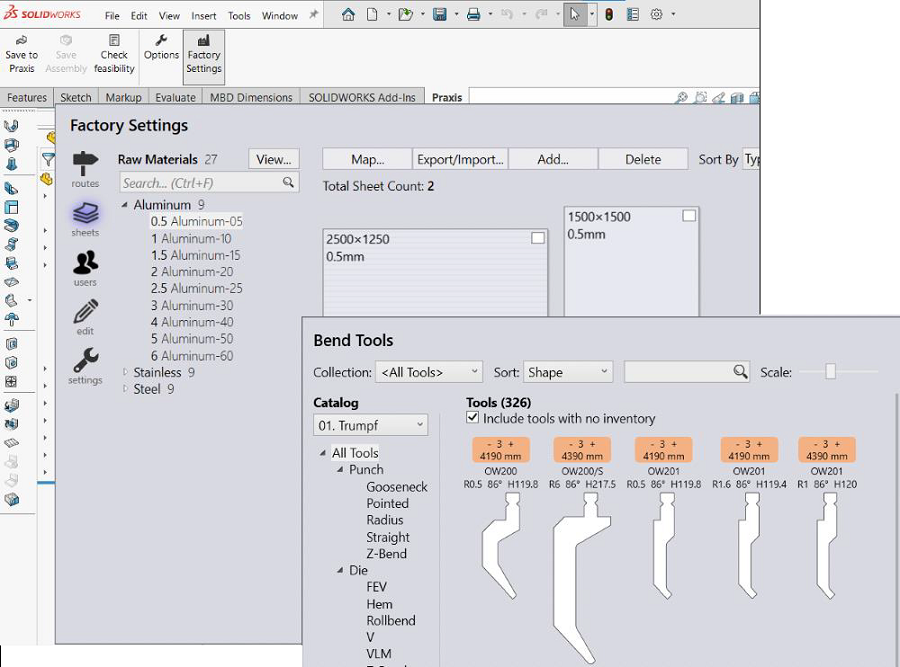

This command is available in Tool • Praxis menu as well on the Part and Assembly command tabs. Use this to view and update 1 Praxis factory settings as well as the Flux settings like Flux materials, bend catalog, custom deductions etc. Accessing the factory settings from CAD is especially useful with the feasibility check when it might be necessary to view and update settings in multiple applications for applying design corrections needed for a feasible part.
